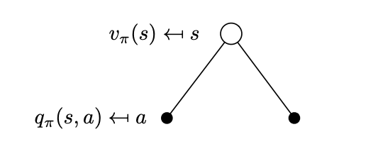
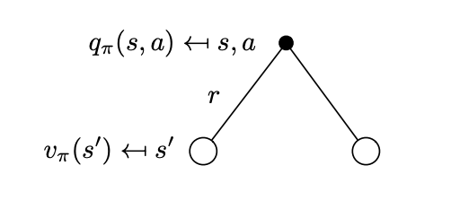
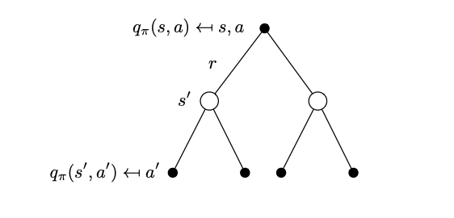
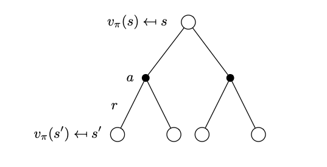

Bellman Expectation Backup
Contents
Bellman Expectation Backup#
Computing the value functions given a policy#
In this section we describe how to calculate the value functions by establishing a recursive relationship similar to the one we did for the return. We replace the expectations with summations over quantities such as states and actions.
Lets start with the state-value function that can be written as,
Note
All above expectations are with respect to policy \(\pi\). In addition there is some missing details in the above derivation.
This is perhaps one of the most important recursions in control theory - it is known as the Bellman expectation equation repeated below:
The parts of the value function above are:
The immediate reward,
The discounted value of the successor state \(\gamma v(S_{t+1}=s^\prime)\).
Similarly to the state-value function we can decompose the action-value function as,
We now face the problem that we need to compute these two value functions and we start by considering what is happening at each time step. At each time step while in state \(S_t=s\) we have a number of actions we can choose, the probabilities of which depend on the policy \(\pi(a|s)\). What value we can reap from each action is given to us by \(q_\pi(s,a)\). This is depicted below.
 Actions can be taken from that state \(s\) according to the policy \(\pi\). Actions are represented in this simple tree with action nodes (solid circles) while state nodes are represented by empty circles.
Translating what we have just described in equation form, allows us to write the state-value equation as,
This sum is easily understood if you move backwards from the action nodes of the tree to the state node. Each edge weighs with \(\pi(a|s)\) the corresponding action-value. This backwards calculation is referred to as a backup.
We can now reason fairly similarly about the action-value function that can be written by taking the expectation,
The first expectation is the reward function \(\mathcal{R}^a_s\) by definition. The second expectation can be written in matrix form by considering that at each time step if we are to take an action \(A_t=a\), the environment can transition to a number of successor states \(S_{t+1}=s'\) and signal a reward \(R_{t+1}\) as shown in the next figure.
 Successor states that can be reached from state \(s\) if the agent selects action \(a\). \(R_{t+1} = r\) is the instantaneous reward for each of the possibilities.
If you recall the agent in the Gridworld, has 80% probability to achieve its intention and make the environment to change the desired state and 20% to make the environment change to not desired states justifying the multiplicity of states given an action in the figure above.
What successor states we will transition to depends on the transition model \(P^a_{ss^\prime} = p[S_{t+1}=s^\prime | S_t=s, A_t=a ]\) . What value we can reap from each successor state is given by \(v_\pi(s^\prime)\). The expectation can then be evaluated as a summation over all possible states \(\sum_{s^\prime \in \mathcal S} \mathcal{P}^a_{ss^\prime} v(s^\prime)\). In conclusion, the action-value function can be written as
Substituting the \(v_\pi(s^\prime)\) is represented by the following tree that considers the action-value function over a look ahead step.
 Tree that represents the action-value function after a one-step look ahead.
Note
Bellman State-Action Value Expectation Equation
Now that we have a computable \(q_\pi(s,a)\) value function we can go back and substitute it into the equation of the state-value function. Again we can representing this substitution by the tree structure below.
 Tree that represents the state-value function after a one-step look ahead.
With the substitution we can write the state-value function as,
Note
Bellman State Value Expectation Equation
In the compact form (2nd line of the equation) we denote:
As we will see in a separate chapter, this equation is going to be used to iteratively calculate the converged value function of each state given an MDP and a policy. The equation is referred to as the Bellman expectation backup - it took its name from the previously shown tree like structure where we use state value functions from the leaf modes \(s^\prime\) to the root node.